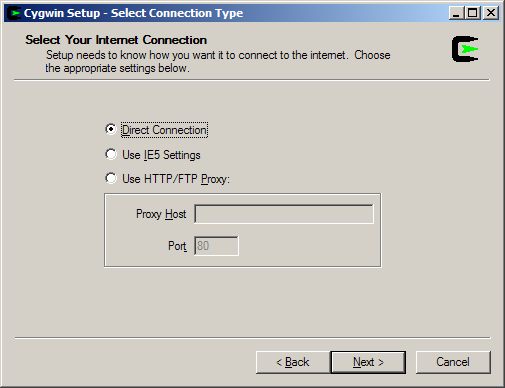
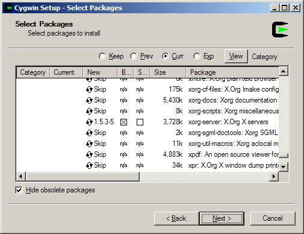
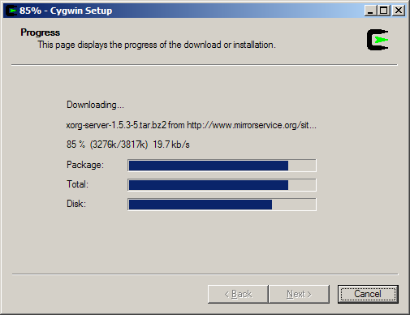

Installing Cygwin/X
Cygwin tools are, in the words of the Cygwin development homepage, http://cygwin.com/, "ports of the popular GNU development tools and utilities for Windows 95, 98, and NT. They function by using the Cygwin library which provides a UNIX-like API on top of the Win32 API." Cygwin allows the compilation of the X Window System source on Win32; several patches were made to the X Window System source to make it actually compile and run under Cygwin.
Cygwin has a nice setup program that downloads and installs the necessary Cygwin packages for you.
Open the Cygwin, http://cygwin.com/ page in your web browser
Click the "Install Cygwin Now" link in the upper-right hand corner of the page. This link downloads setup.exe from the primary Cygwin server; save setup.exe to the directory that you would like to store the downloaded packages in (e.g. c:\download); do not save setup.exe to c:\cygwin, as that is the default directory for the extraction and installation of the downloaded packages.
Run setup.exe, you will see the welcome screen:

Click to proceed to the next screen.
Choose, Install from Internet, this will still save the package files to your download directory so that you can install Cygwin on any number of machines:

Click to proceed to the next screen.
The default Install Root is c:\cygwin which should be fine for most installations. Leave Default Text File Type as UNIX. Leave Install For set to All unless you lack local administrative privileges.

Click to proceed to the next screen.
Local Package Directory should default to the directory that you ran setup.exe from:

Click to proceed to the next screen.
Choose your proxy setup, or, just choose Direct Connection if no proxy is needed:

Click to proceed to the next screen.
Select your nearest mirror for downloading:

Click to proceed to the next screen; setup will download a list of available packages as it moves to the next screen.
On the next screen you will select the packages that will be downloaded and installed. A listing of the Cygwin/X packages is given below; a listing of the general Cygwin packages would be beyond the scope of this document.
Cygwin/X packages are located in the X11 category.
xorg-server (required, the Cygwin/X X Server)
xinit (required, scripts for starting the X server: xinit, startx, startwin (and a shortcut on the Start Menu to run it), startxdmcp.bat )
xorg-docs (optional, man pages)
X-start-menu-icons (optional, adds icons for X Clients to the Start menu)
You may also select any X client programs you want to use, and any fonts you would like to have available.
You may also want to ensure that the inetutils or openssh packages are selected if you wish to use telnet or ssh connections to run remote X clients.

Click to begin the download process, you may want to try another mirror if you see a "Connecting" message on this screen for a long period of time:

After the packages are downloaded, setup will automatically begin to install them:

I highly recommend allowing Cygwin Setup to create Desktop and Start Menu icons for you; these icons simply launch a bash shell:

Click to close the setup program.
You have now successfully installed Cygwin/X. Proceed to Chapter 4 for instructions on how to use Cygwin/X.